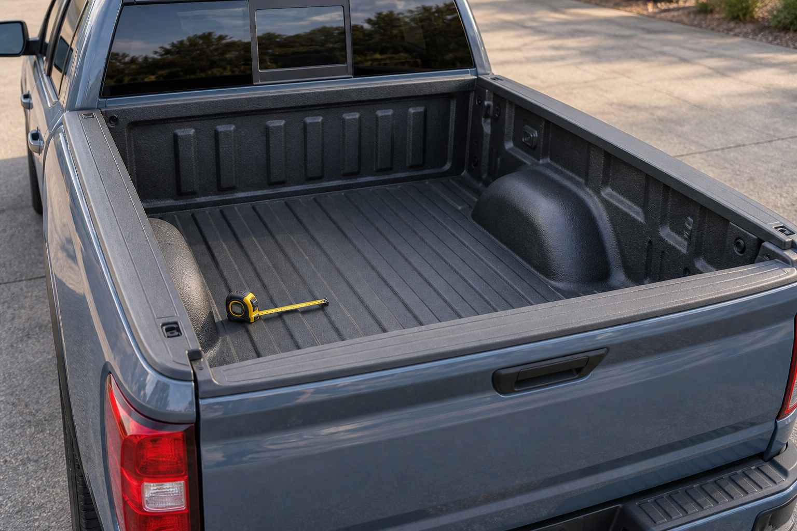
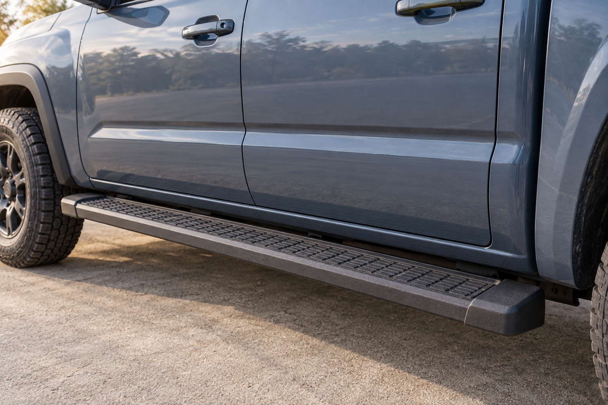

How to Measure Your Truck Bed for a Tonneau Cover
Measure your truck bed, understand inches and bed-size labels, and check vehicle details and accessories before ordering a tonneau cover.
Read guideFitment advice and practical guides for your next truck upgrade.

Measure your truck bed, understand inches and bed-size labels, and check vehicle details and accessories before ordering a tonneau cover.
Read guide
Compare running board fitment, cab-length and wheel-to-wheel layouts, step height, and mounting kits. Know what to ask before ordering for your truck.
Read guideNo guides match. Try another search or category.
Check fitment, measurements and installation questions.
Browse the FAQCover images are AI-generated illustrations, not product photographs.